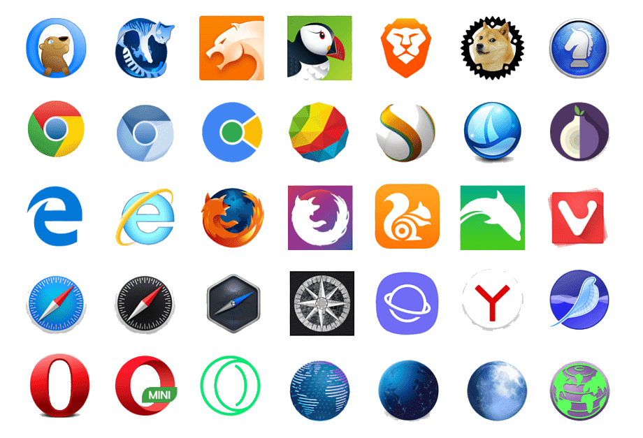

George Salt
Blog
CSS
5 минут
2023 г
HTML (от английского - «HyperText Markup Language») — это язык разметки, который используется для формирования содержимого страницы в браузере. HTML применяется только для создания структуры веб-страницы.
Последовательность взаимодействия браузера с HTML следующая: браузер получает HTML-страницу от сервера, используя протокол HTTP или HTTPS, затем — такой документ интерпретируется в программный интерфейс, который и будет выводиться на конечное пользовательское устройство. Страница HTML создается при помощи базовых элементов HTML (гиперссылки, списки, изображения, символы, текстовые блоки, таблицы). Если за структуру страницы отвечает только HTML, то за её внешний вид — каскадные таблицы стилей (CSS).
HTML не является языком программирования - это язык разметки, и используется для того, чтобы сообщать браузеру, как отображать веб-страницы, которые вы посещаете.
Используя HTML, можно создать свой собственный веб-сайт, персональный блог или интернет-магазин. Важно понимать, что этот язык является только частью веб-разработки, и для создания полноценных веб-сайтов необходимо знание дополнительных технологий, таких как CSS и JavaScript.
1. Он достаточно прост в изучении и использовании.
2. Он поддерживается всеми браузерами.
3. Это самый распространенный язык разметки веб-страниц.
4. Он не зависит от платформы, для работы достаточно иметь браузер, в котором, собтвенно, и открываются веб-страницы.
1. На нем нельзя создавать динамические веб-страницы.
2. Даже на простую веб-страницу уходит большое количество кода.
3. Нельзя добавить функциональность блоку, не прибегая к другим языкам.